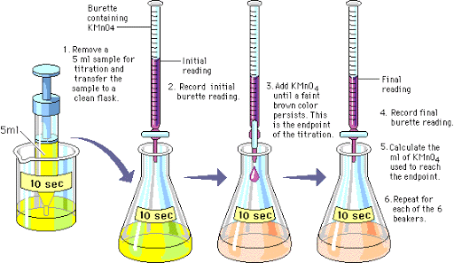

Titrations
Why do we use them?
Whenever a scientist has a solution but doesn't know the Molarity of it, they conduct a titration experiment where they have a base that they know the molarity of, keeps the volumes of both solutions the same, and use Phenolphthalein to detect when the acid and base cancel each other out. The GIF on the right is an example of what happens in a titration -->

How do we do them?
The experiment, like all science experiments, requires a procedure. The following is the one for titrations:
-
To start off, grab the following materials:
- Burette
- Ring stand with a butterfly clamp
- Sodium hydroxide
- Wash bottle
- Phenolphthalein
- A solution of acid
- Beaker
- Flask
- Funnel
- Pipette
- Volumetric pipette
- Goggles
- To make sure that the data is accurate, you must clean it with water.
- Using a volumetric pipette, obtain precisely 10 ml of hydrochloric acid and put it into a 125 ml flask. ( size of the flask doesn't really matter, it just needs to be big enough to hold all the liquid).
- Hold a finger on the scroll wheel so the liquid does not fall out and release it into the flask.
- Lightly drop 5 - 7 drops of phenolphthalein into the same flask.
- Next, you must use a funnel to fill the burette with sodium hydroxide. (make sure that the stopcock is closed before pouring. and pour slowly because in some funnels the liquid builds up and before you know it, your burette will be overflowing everywhere taking away from the actual experiment).
- Once you have filled up your burette with sodium hydroxide to precisely 0 mL (it can be a little over) you may begin the actual experiment.
- The point of each trial is to pour the acid into the flask with the base and Phenolphthalein until the solution in the flask turns pink. This, theoretically, means that the base and acid are canceling each other out which means that we can now find the Molarity of the acid with simple algebra from the data. The image below provides a visual: 
- While doing a titration, it is best to do multiple trials to get the overall average result which is likely the most accurate. doing multiple trails also allows for one to do a rough trial which is faster.
- A rough trial is generally going to be the first trial that is not necessarily accurate but gives you a good understanding of how far you have to go so your not wasting time by putting one drop in at a time for 10ml. that is inefficient and takes too long.
EX: for my rough trial if my acid turns pink at 17ml I know the next trial I can go to 15-16ml safely before I start going drop by drop. Another indicator that you are very close is when one drop takes a lot of mixing to get back to clear. that means you are very close and should start using a wash bottle. - Once you think you are close, start going drop by drop by carefully managing the stopcock.
- If you get the sense you are right there use your wash bottle and spray the tip of the burette where the sodium hydroxide comes out sometimes the little remaining bit on the tip of the burette is all you need to turn the solution basic. The goal is to get a faint pink color in the liquid. if this is true for you, good job you have neutralized the unknown molarity of acid.
BE CAREFUL TAKE YOUR TIME
and the more you practice the better feel you get for it when it comes to figuring out how close you are.
How do the calculations work?
After we finish all our trials, we are left with the following set of data:
| Value | Acid | Base |
|---|---|---|
| Volume | The average of all your trials | Whatever volume you chose for your experiment |
| Molarity | The unknown value | Depends on the base you've chosen |
Notice how the Molarity is unknown, but the whole point of the titration was to determine that value. This is where our basic algebra skills come in.
With the formula:
MaVa = MbVb
- Ma: Molarity of the acid.
- Mb: Molarity of the base.
- Va: Volume of the acid.
- Vb: Volume of the base.
We can find the accurate molarity of the acid.